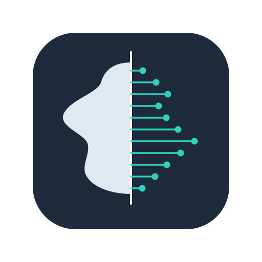
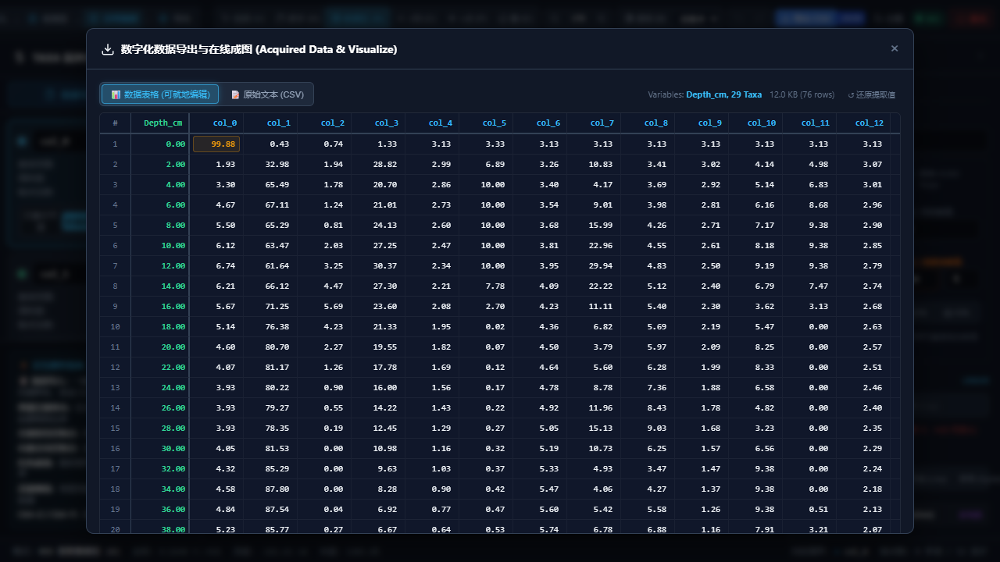

Straditize PRO v2.0彻底告别传统 PyQt 桌面图形包卡顿与模糊。基于统一数学真相源、两点式物理标定、等深横向几何求交与 WPD 级多格式导出，专为第四纪古生态学与地质科学打造。

从算法底层到交互视口，重新定义地学图谱数字化行业基准
拒绝生硬的 0-100% 相对比例假设。端点 1 锚定基准线与任意起始物理值，端点 2 精准对齐图谱刻度齿，直观可控。
单一模块集中维护 px ↔ cm ↔ value 变换。内置对数前置硬约束校验（start>0, tick>0），杜绝计算崩塌与静默降级。
以地层连续剖面深度横向截交全属种轮廓线。未出现属种严格输出真值 0.0（绝不输出破坏生态统计模型的伪 NA）。
对齐 WebPlotDigitizer (WPD) 的专业导出器，一键生成配套 R 语言地层出图脚本，出版级花粉图谱开箱秒绘。
无专有加密格式。项目保存为纯正 .tar 归档包（含原图、straditize.json 矢量模型、矩阵数据与绘图脚本），同行评议 100% 还原。
废除繁琐易失效的 Token 与密码层。服务器严格监听 127.0.0.1，网络安全边界全权委托给 SSH 端口转发。